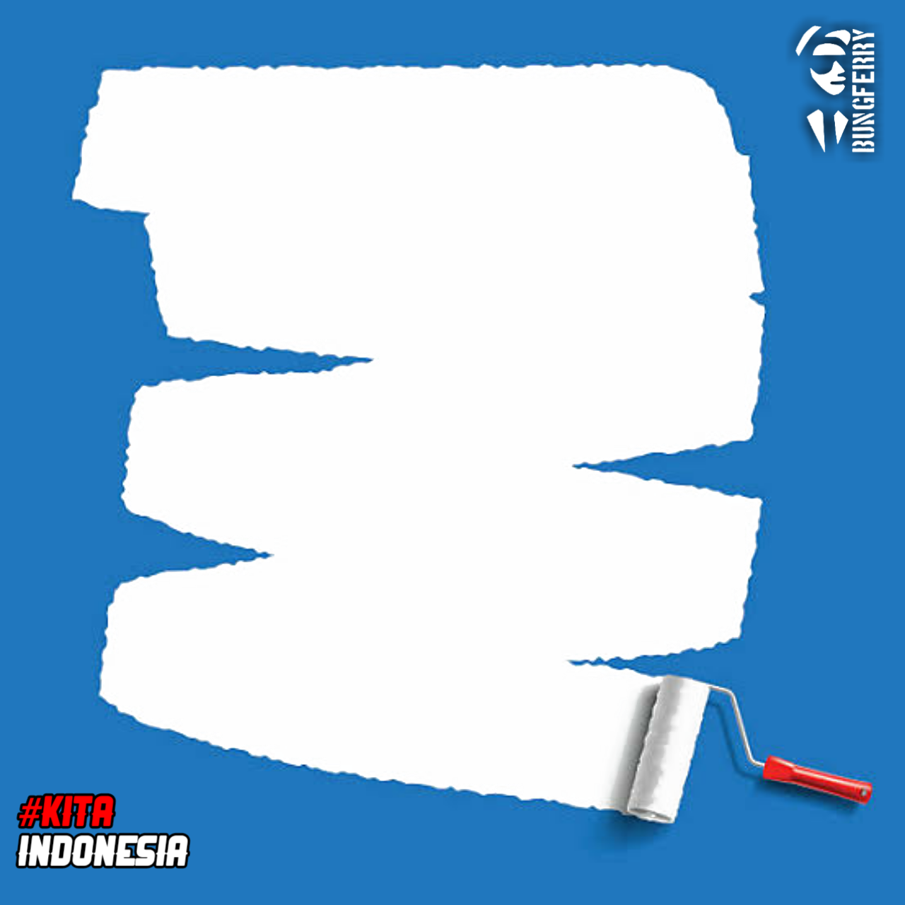

Ini adalah situs web tempat Anda dapat menambahkan foto ke dalam bingkai.
Upload gambar yang ingin di jadikan twibbon lalu klik 'Buat twibbon!'.
Klik kanan dan save untuk PC atau sentuh dan tahan lalu download image untuk smartphone jika link download mati.

Pastikan gambar yang di upload memiliki ukuran.
Hubungi kami: